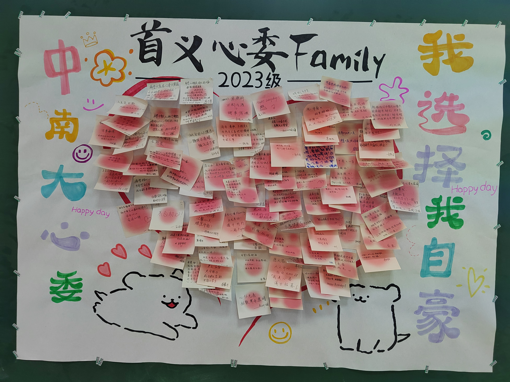
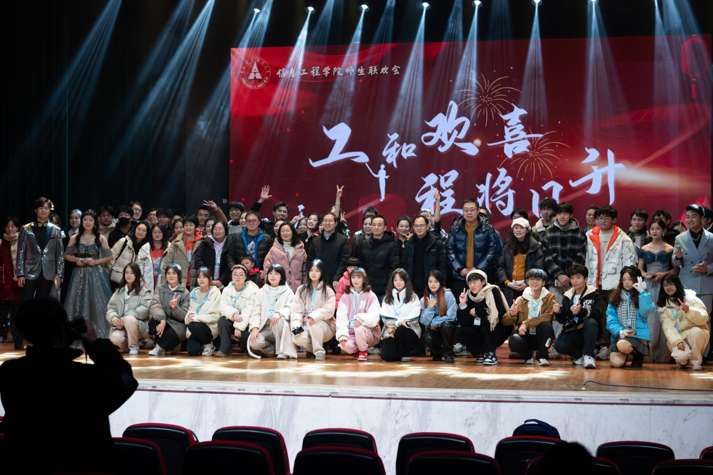
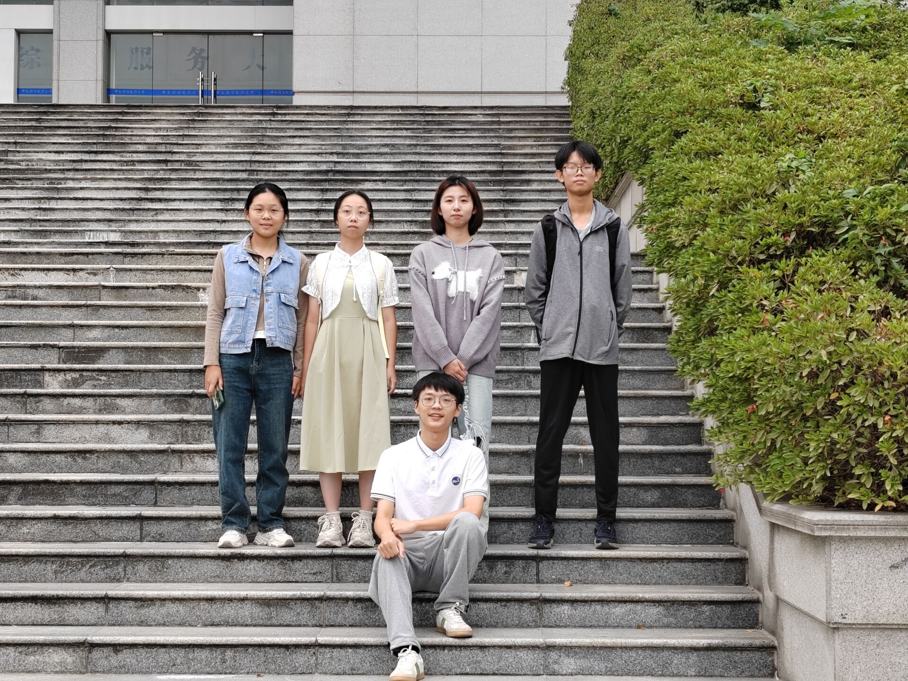
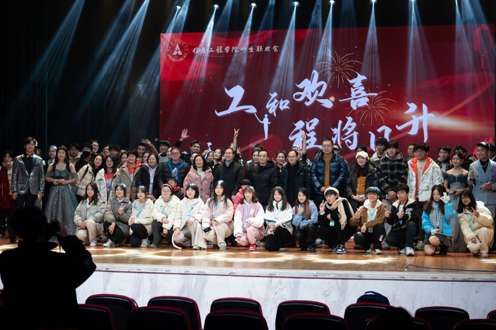
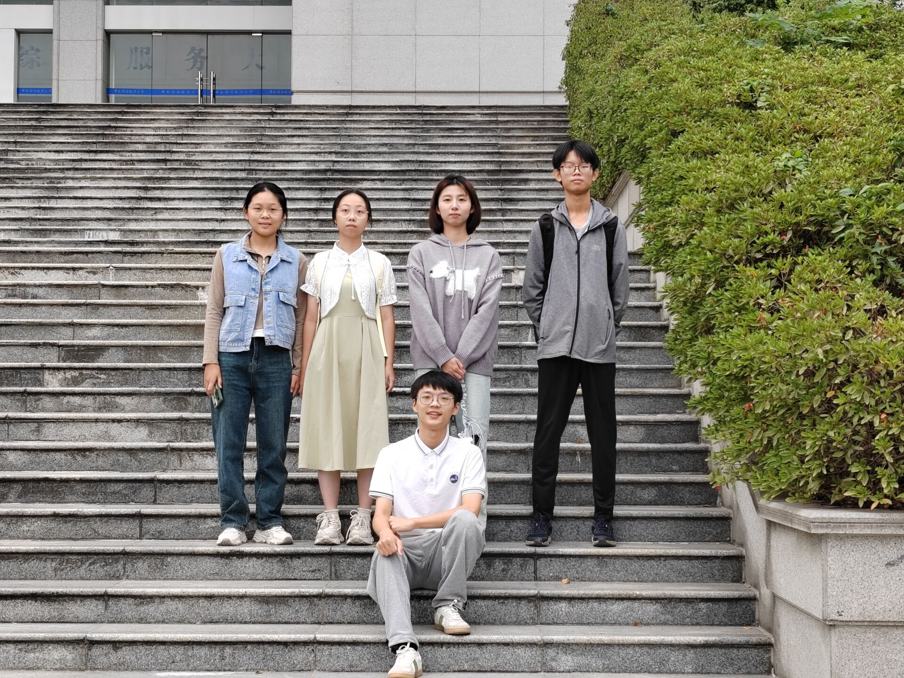

教育背景
| 应届时间 | 学校 | 专业 | 目前年级 |
|---|---|---|---|
| 2023-2027 | 中南财经政法大学 | 信息管理与信息系统 | 大二 |
技能
- HTML/CSS/JavaScript
- Python 编程
- c++ 编程
- Java 编程
- 数据库管理与应用
曾获得荣誉和经历
- 军训期间作为军训联络员，被评为优秀个人
- 任职两年班级内心理委员
- 被评为优秀志愿者
- 被评为“一星志愿者”
- 在院团学志任职社团部负责人，曾参与学院75周年院庆组建以及这两年的送毕晚会组建
- 担任校级组织尼加提·雪莲花志愿者服务队育苗基金委员会项目骨干
照片墙
 


